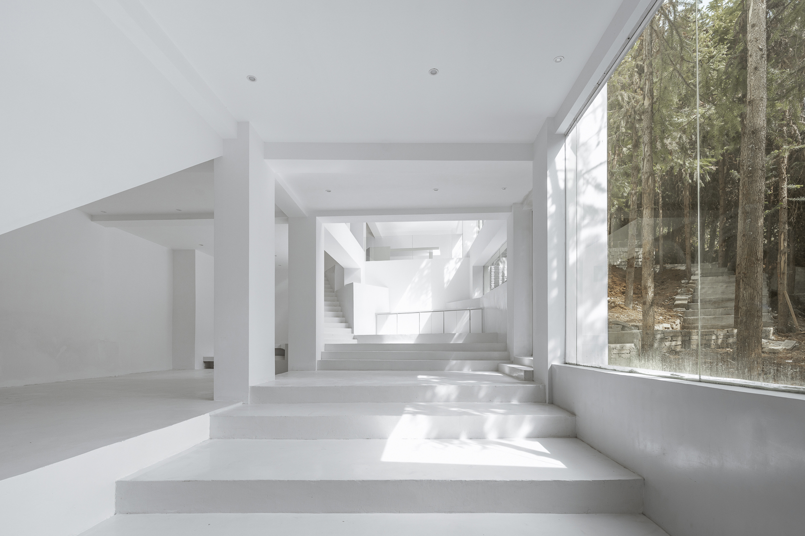

ARCHITECTURE · CITY · INTERIOR
建筑摄影师。基于对空间的忠诚表达，辅以一定的视觉修饰，做一次特定场所下的二次设计。
四个拍摄方向共 40 个项目——建筑外立面的尺度与材质、室内空间的光线与叙事、景观的场所感、以及产品与空间的关系。
建筑摄影不再是单纯的摄影创作——它是在特定场所进行的一次二次设计。
金伟琦，建筑摄影师，常驻北京。业务方向覆盖建筑、室内、景观与产品摄影。
空间表达的准确性是根本——为没有到过实地的人做真实记录，为设计师全方位呈现方案。天气、光线、人的行为都是画面设计中的重要元素。一个好的画面会带动观者的情绪，为设计的最终呈现起到画龙点睛的作用。